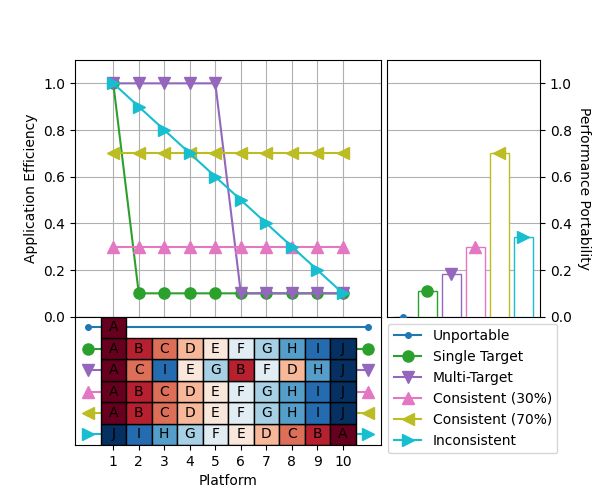

Note
Click here to download the full example code
Simple Cascade¶
A simple cascade plot.
This example uses the synthetic performance efficiency data introduced in the paper “Interpreting and Visualizing Performance Portability Metrics” to demonstrate the structure and interpretation of a cascade plot.
The dataset contains application efficiency for six hypothetical applications:
Unportable: Runs on only one platform.
Single Target: Runs everywhere, but with high efficiency on one platform.
Multi-Target: Runs everywhere, with high efficiency on half of the platforms.
Consistent (30%): Runs everywhere, with 30% efficiency.
Consistent (70%): Runs everywhere, with 70% efficiency.
Inconsistent: Runs everywhere, with inconsistent efficiency.
The line chart shows the efficiency of each application for every platform it supports. Platforms are sorted individually for each application, in decreasing order of application efficiency.
The boxes underneath the line chart show which platform is associated with each point in the line chart, for each application.
The bar chart shows the performance portability of each application.
import matplotlib as mpl
import matplotlib.pyplot as plt
import pandas as pd
import p3
# Initialize synthetic performance efficiency data
# (not shown, but available in script download)
# Read performance efficiency data into pandas DataFrame
df = pd.DataFrame(data)
# Generate a cascade plot
fig = plt.figure(figsize=(6, 5))
ax = p3.plot.cascade(df)
plt.savefig("cascade.png", bbox_inches="tight")
Total running time of the script: ( 0 minutes 0.999 seconds)